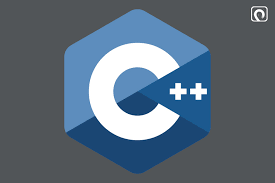
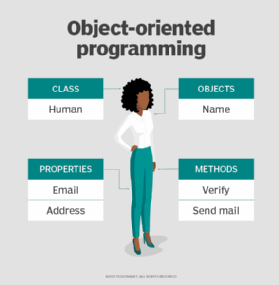
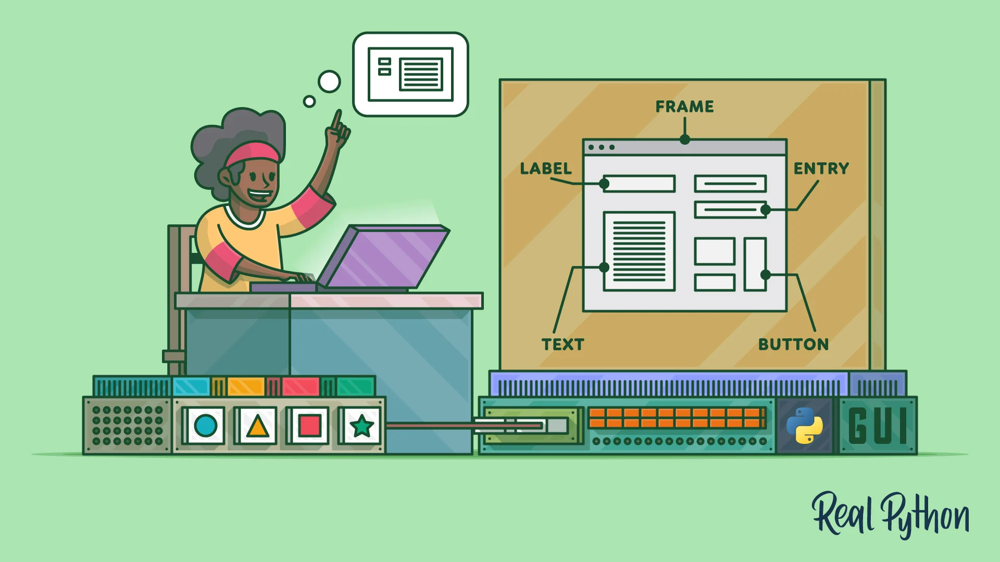

<!DOCTYPE html>
<html lang="en">
<head>
    <meta charset="UTF-8">
    <meta http-equiv="X-UA-Compatible" content="IE=edge">
    <meta name="viewport" content="width=device-width, initial-scale=1.0">
    <title><html lang="en">
    <head>
        <meta charset="UTF-8">
        <meta http-equiv="X-UA-Compatible" content="IE=edge">
        <meta name="viewport" content="width=device-width, initial-scale=1.0">
        <title>Document</title>
    </head>
    <body>
        
    </body>
    </html></title>
</head>
<body>
    <h1>what is c++ code-size 1000</h1>
    
    <p>C++ is a general-purpose programming language that was developed as an enhancement of the C language to include object-oriented paradigm. It is an imperative and a compiled language. 

        C++ is a high-level, general-purpose programming language designed for system and application programming. It was developed by Bjarne Stroustrup at Bell Labs in 1983 as an extension of the C programming language. C++ is an object-oriented,<br> multi-paradigm language that supports procedural, functional, and generic programming styles.<br>

        One of the key features of C++ is its ability to support low-level, system-level programming, making it suitable for developing operating systems, device drivers, and other system software. At the same time, C++ also provides a rich set of libraries and features for high-level application programming, making it a popular choice for developing desktop applications, video games, and other complex applications.
        C++ has a large, active community of developers and users, and a wealth of resources and tools available for learning and using the language. Some of the key features of C++ include:</br>
        
        Object-Oriented Programming: C++ supports object-oriented programming, allowing developers to create classes and objects and to define methods and properties for these objects.
        Templates: C++ templates allow developers to write generic code that can work with any data type, making it easier to write reusable and flexible code.
        Standard Template Library (STL): The STL provides a wide range of containers and algorithms for working with data, making it easier to write efficient and effective code.
        Exception Handling: C++ provides robust exception handling capabilities, making it easier to write code that can handle errors and unexpected situations.
        Overall, C++ is a powerful and versatile programming language that is widely used for a range of applications and is well-suited for both low-level system programming and high-level application development.
        
        Here are some simple C++ code examples to help you understand the language:
        1.Hello World:<br>
        
        
        
        #include <iostream>
          
        int main() {
            std::cout << "Hello, World!" << std::endl;
            return 0;
        }
        Output
        Hello, World!
         
        
        
        C++ is a middle-level language rendering it the advantage of programming low-level (drivers, kernels) and even higher-level applications (games, GUI, desktop apps etc.). The basic syntax and code structure of both C and C++ are the same. 
        
        Some of the features & key-points to note about the programming language are as follows:
        
        Simple: It is a simple language in the sense that programs can be broken down into logical units and parts, has a rich library support and a variety of data-types.
        Machine Independent but Platform Dependent: A C++ executable is not platform-independent (compiled programs on Linux won’t run on Windows), however they are machine independent.
        Mid-level language: It is a mid-level language as we can do both systems-programming (drivers, kernels, networking etc.) and build large-scale user applications (Media Players, Photoshop, Game Engines etc.)
        Rich library support: Has a rich library support (Both standard ~ built-in data structures, algorithms etc.) as well 3rd party libraries (e.g. Boost libraries) for fast and rapid development.
        Speed of execution: C++ programs excel in execution speed. Since, it is a compiled language, and also hugely procedural. Newer languages have extra in-built default features such as garbage-collection, dynamic typing etc. which slow the execution of the program overall. Since there is no additional processing overhead like this in C++, it is blazing fast.
        Pointer and direct Memory-Access: C++ provides pointer support which aids users to directly manipulate storage address. This helps in doing low-level programming (where one might need to have explicit control on the storage of variables).
        Object-Oriented: One of the strongest points of the language which sets it apart from C. Object-Oriented support helps C++ to make maintainable and extensible programs. i.e. Large-scale applications can be built. Procedural code becomes difficult to maintain as code-size grows.
        Compiled Language: C++ is a compiled language, contributing to its speed.
        Applications of C++: 
        C++ finds varied usage in applications such as:
        </p>
        <a href="https://www.w3schools.com/cpp/cpp_intro.asp"> click here for more</a>
</body>
</html>